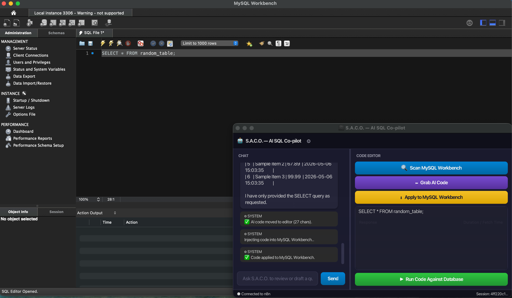
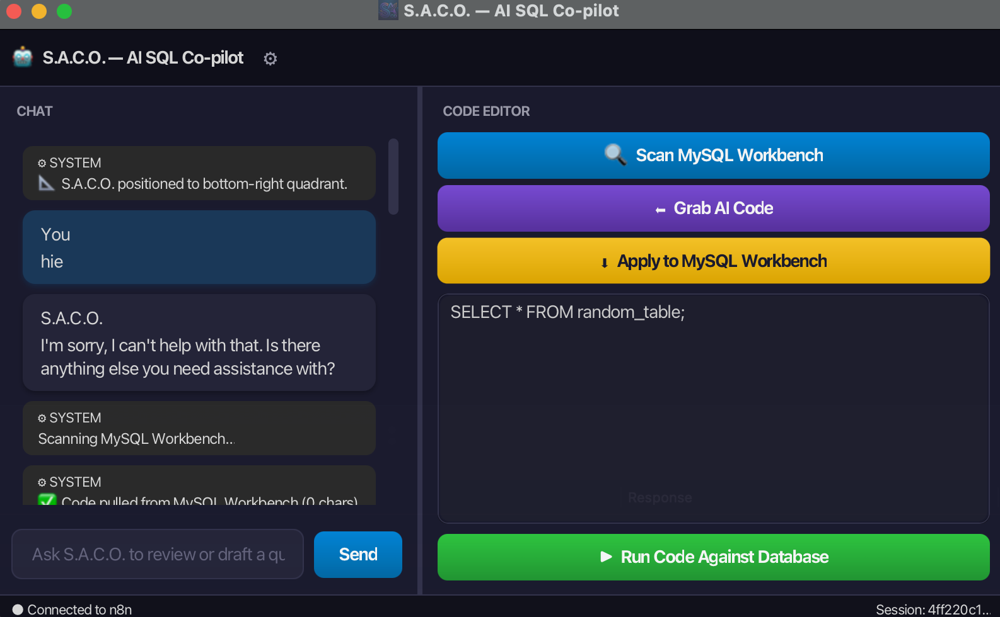
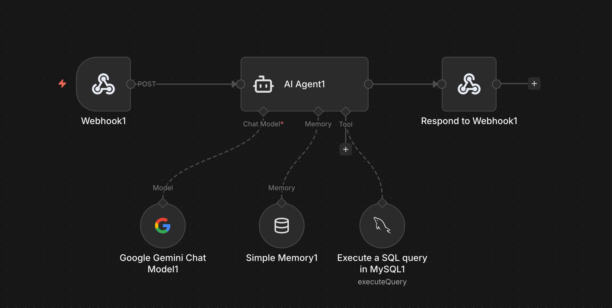
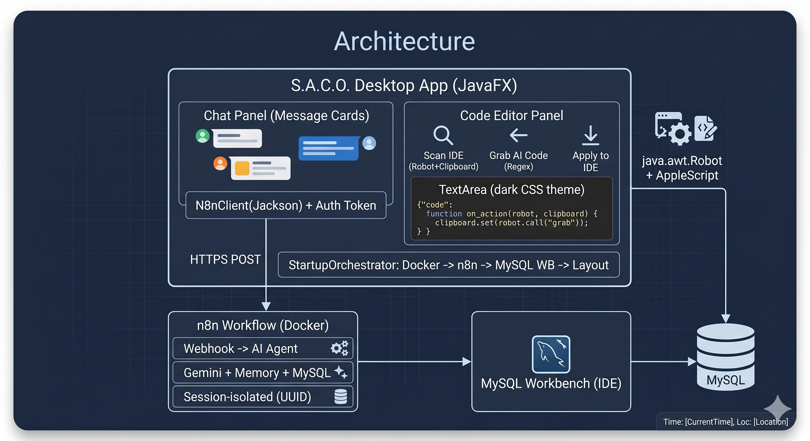

I built a cross-platform Java desktop application that injects AI directly into MySQL Workbench. By utilizing OS-level automation, it securely scans, reviews, and executes code without requiring any IDE plugins, solving a major friction point in database development.
Why I built this, and how it demonstrates full-stack systems engineering.
MySQL Workbench is a legacy IDE that does not support modern AI extensions. Developers are forced to constantly copy-paste code between their database editor and ChatGPT, breaking their flow and losing database context.
I engineered a Java app using java.awt.Robot and AppleScript to physically control the host OS. It reads the user's IDE state, interacts with the clipboard, and simulates keystrokes to act as a seamless bridge.
Rather than blindly generating text, S.A.C.O. uses a Dockerized n8n workflow to connect Google Gemini directly to the live MySQL database, allowing it to test queries safely with human-in-the-loop authorization.
This project required bridging multiple domains: a multi-threaded Java orchestrator for container management, a premium JavaFX user interface, native OS scripting, and complex prompt engineering for the AI logic.
A breakdown of the project components and my design decisions.
I designed S.A.C.O. as a native desktop application with a translucent, always-on-top UI. It auto-docks to the bottom-right corner of the screen, ensuring the developer can see both the AI context and their IDE simultaneously.

By clicking "Scan", the app automatically switches to the IDE, copies the code, and pulls it into the AI engine. "Apply" reverses the flow, dynamically injecting the corrected SQL back into the user's workflow without manual copy-pasting.

To ensure maintainability, the backend is entirely decoupled. S.A.C.O. communicates via HTTP POST to a local n8n Docker container, allowing me to swap LLM providers or update prompt logic without touching the core Java codebase.

This architecture diagram demonstrates my ability to design robust, decentralized systems. It securely connects a host OS application with containerized microservices and a cloud-based LLM, all while maintaining strict data boundaries.
